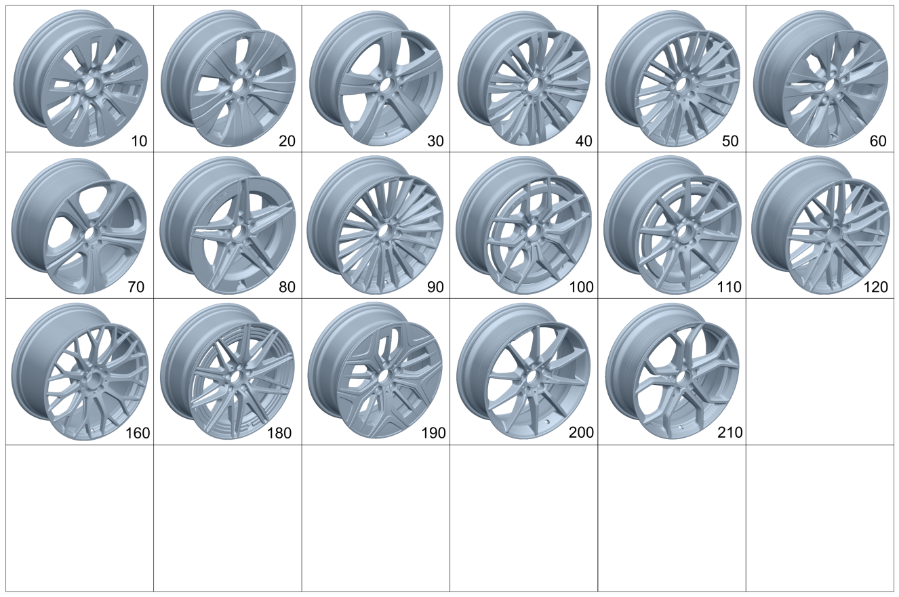

| № | Артикул | Название | Кол. | Примечание | Ограничение |
|---|---|---|---|---|---|
| 10 | A 206 401 01 00 | Дисковое колесо | 2 | Передний мост; 6,5J X 17 H2 ET 34,5 [-] Ознакомиться с инструкцией по выполнению работ в WIS-NET#GF40.10-P-0804B# | 69R |
| 10 | A 206 401 01 00 | Дисковое колесо | 2 | Передний мост; 6,5J X 17 H2 ET 34,5 [-] Ознакомиться с инструкцией по выполнению работ в WIS-NET#GF40.10-P-0804B# | 16R |
| 10 | A 206 401 70 00 | Дисковое колесо | 2 | Передний мост; 7J X 17 H2 ET 44.5 [002869] СОБЛЮДАТЬ РУКОВОДСТВО ПО ВЫПОЛНЕНИЮ РАБОТ В WIS-NET#GF40.10-P-0804B# | 09R |
| 10 | A 206 401 02 00 | Дисковое колесо | 2 | Передний мост; 7J X 17 H2 ET 44.5 [-] Ознакомиться с инструкцией по выполнению работ в WIS-NET#GF40.10-P-0804B# | R81 |
| 10 | A 206 401 01 00 | Дисковое колесо | 2 | Задний мост; 6,5J X 17 H2 ET 34,5 [-] Ознакомиться с инструкцией по выполнению работ в WIS-NET#GF40.10-P-0804B# | 69R |
| 10 | A 206 401 01 00 | Дисковое колесо | 2 | Задний мост; 6,5J X 17 H2 ET 34,5 [-] Ознакомиться с инструкцией по выполнению работ в WIS-NET#GF40.10-P-0804B# | 16R |
| 10 | A 206 401 70 00 | Дисковое колесо | 2 | Задний мост; 7J X 17 H2 ET 44.5 [002869] СОБЛЮДАТЬ РУКОВОДСТВО ПО ВЫПОЛНЕНИЮ РАБОТ В WIS-NET#GF40.10-P-0804B# | 09R |
| 10 | A 206 401 03 00 | Дисковое колесо | 2 | Задний мост; 8J X 17 H2 ET 49,5 [-] Ознакомиться с инструкцией по выполнению работ в WIS-NET#GF40.10-P-0804B# | R81 |
| 10 | A 206 401 01 00 | Дисковое колесо | 2 | Передний мост; 6,5J X 17 H2 ET 34,5 [-] Ознакомиться с инструкцией по выполнению работ в WIS-NET#GF40.10-P-0804B# | 2R9 |
| 10 | A 206 401 01 00 | Дисковое колесо | 2 | Задний мост; 6,5J X 17 H2 ET 34,5 [-] Ознакомиться с инструкцией по выполнению работ в WIS-NET#GF40.10-P-0804B# | 2R9 |
| 20 | A 206 401 71 00 | Дисковое колесо | 2 | Передний мост; 7J X 17 H2 ET 44.5 [-] Ознакомиться с инструкцией по выполнению работ в WIS-NET#GF40.10-P-0804B# | R69 |
| 20 | A 206 401 90 00 | Дисковое колесо | 2 | Передний мост; 7J X 17 H2 ET 44.5 [-] Ознакомиться с инструкцией по выполнению работ в WIS-NET#GF40.10-P-0804B# | R69+832 |
| 20 | A 206 401 41 00 | Дисковое колесо | 2 | Передний мост; 7J X 17 H2 ET 44 [-] Ознакомиться с инструкцией по выполнению работ в WIS-NET#GF40.10-P-0804B# | R22 |
| 20 | A 206 401 71 00 | Дисковое колесо | 2 | Задний мост; 7J X 17 H2 ET 44.5 [-] Ознакомиться с инструкцией по выполнению работ в WIS-NET#GF40.10-P-0804B# | R69 |
| 20 | A 206 401 90 00 | Дисковое колесо | 2 | Задний мост; 7J X 17 H2 ET 44.5 [-] Ознакомиться с инструкцией по выполнению работ в WIS-NET#GF40.10-P-0804B# | R69+832 |
| 20 | A 206 401 42 00 | Дисковое колесо | 2 | Задний мост; 8J X 17 H2 ET 49,5 [-] Ознакомиться с инструкцией по выполнению работ в WIS-NET#GF40.10-P-0804B# | R22 |
| 30 | A 206 401 72 00 | Дисковое колесо | 2 | Передний мост; 7 J X 17 H2 ET 44.5 [-] Ознакомиться с инструкцией по выполнению работ в WIS-NET#GF40.10-P-0804B# | R24 |
| 30 | A 206 401 45 00 | Дисковое колесо | 2 | Передний мост; 7J X 17 H2 ET 44 [-] Ознакомиться с инструкцией по выполнению работ в WIS-NET#GF40.10-P-0804B# | 37R |
| 30 | A 206 401 47 00 | Дисковое колесо | 2 | Передний мост; 7,5J X 18 H2 ET 40 [-] Ознакомиться с инструкцией по выполнению работ в WIS-NET#GF40.10-P-0804B# | R32 |
| 30 | A 206 401 72 00 | Дисковое колесо | 2 | Задний мост; 7 J X 17 H2 ET 44.5 [-] Ознакомиться с инструкцией по выполнению работ в WIS-NET#GF40.10-P-0804B# | R24 |
| 30 | A 206 401 46 00 | Дисковое колесо | 2 | Задний мост; 8J X 17 H2 ET 49,5 [-] Ознакомиться с инструкцией по выполнению работ в WIS-NET#GF40.10-P-0804B# | 37R |
| 30 | A 206 401 48 00 | Дисковое колесо | 2 | Задний мост; 8,5J X 18 H2 ET 52 [-] Ознакомиться с инструкцией по выполнению работ в WIS-NET#GF40.10-P-0804B# | R32 |
| 30 | A 206 401 72 00 | Дисковое колесо | 2 | Передний мост; 7 J X 17 H2 ET 44.5 [-] Ознакомиться с инструкцией по выполнению работ в WIS-NET#GF40.10-P-0804B# | 1R5 |
| 30 | A 206 401 45 00 | Дисковое колесо | 2 | Передний мост; 7J X 17 H2 ET 44 [-] Ознакомиться с инструкцией по выполнению работ в WIS-NET#GF40.10-P-0804B# | 4R4 |
| 30 | A 206 401 72 00 | Дисковое колесо | 2 | Задний мост; 7 J X 17 H2 ET 44.5 [-] Ознакомиться с инструкцией по выполнению работ в WIS-NET#GF40.10-P-0804B# | 1R5 |
| 30 | A 206 401 46 00 | Дисковое колесо | 2 | Задний мост; 8J X 17 H2 ET 49,5 [-] Ознакомиться с инструкцией по выполнению работ в WIS-NET#GF40.10-P-0804B# | 4R4 |
| 40 | A 206 401 44 00 | Дисковое колесо | 2 | Передний мост; 7J X 17 H2 ET 44.5 [-] Ознакомиться с инструкцией по выполнению работ в WIS-NET#GF40.10-P-0804B# | R15 |
| 40 | A 206 401 44 00 | Дисковое колесо | 2 | Передний мост; 7J X 17 H2 ET 44.5 [002869] СОБЛЮДАТЬ РУКОВОДСТВО ПО ВЫПОЛНЕНИЮ РАБОТ В WIS-NET#GF40.10-P-0804B# | 3R5 |
| 40 | A 206 401 44 00 | Дисковое колесо | 2 | Задний мост; 7J X 17 H2 ET 44.5 [002869] СОБЛЮДАТЬ РУКОВОДСТВО ПО ВЫПОЛНЕНИЮ РАБОТ В WIS-NET#GF40.10-P-0804B# | 3R5 |
| 50 | A 206 401 49 00 | Дисковое колесо | 2 | Передний мост; 7,5J X 18 H2 ET 40 [002869] СОБЛЮДАТЬ РУКОВОДСТВО ПО ВЫПОЛНЕНИЮ РАБОТ В WIS-NET#GF40.10-P-0804B# | R86 |
| 50 | A 206 401 44 00 | Дисковое колесо | 2 | Задний мост; 7J X 17 H2 ET 44.5 [-] Ознакомиться с инструкцией по выполнению работ в WIS-NET#GF40.10-P-0804B# | R15 |
| 50 | A 206 401 50 00 | Дисковое колесо | 2 | Задний мост; 8,5J X 18 H2 ET 52 [002869] СОБЛЮДАТЬ РУКОВОДСТВО ПО ВЫПОЛНЕНИЮ РАБОТ В WIS-NET#GF40.10-P-0804B# | R86 |
| 50 | A 206 401 49 00 | Дисковое колесо | 2 | Задний мост; 7,5J X 18 H2 ET 40 [-] Ознакомиться с инструкцией по выполнению работ в WIS-NET#GF40.10-P-0804B# | R86+645 |
| 50 | A 206 401 49 00 | Дисковое колесо | 2 | Передний мост; 7,5J X 18 H2 ET 40 [-] Ознакомиться с инструкцией по выполнению работ в WIS-NET#GF40.10-P-0804B# | 5R6 |
| 50 | A 206 401 49 00 | Дисковое колесо | 2 | Задний мост; 7,5J X 18 H2 ET 40 [-] Ознакомиться с инструкцией по выполнению работ в WIS-NET#GF40.10-P-0804B# | 5R6 |
| 60 | A 206 401 73 00 | Дисковое колесо | 2 | Передний мост; 7,5J X 18 H2 ET 40 [002869] СОБЛЮДАТЬ РУКОВОДСТВО ПО ВЫПОЛНЕНИЮ РАБОТ В WIS-NET#GF40.10-P-0804B# | 22R |
| 60 | A 206 401 51 00 | Дисковое колесо | 2 | Передний мост; 7,5J X 18 H2 ET 40 [-] Ознакомиться с инструкцией по выполнению работ в WIS-NET#GF40.10-P-0804B# | R87 |
| 60 | A 206 401 14 00 | Дисковое колесо | 2 | Задний мост; 9J X 18 H2 ET 58 [002869] СОБЛЮДАТЬ РУКОВОДСТВО ПО ВЫПОЛНЕНИЮ РАБОТ В WIS-NET#GF40.10-P-0804B# | 22R |
| 60 | A 206 401 52 00 | Дисковое колесо | 2 | Задний мост; 8,5J X 18 H2 ET 52 [-] Ознакомиться с инструкцией по выполнению работ в WIS-NET#GF40.10-P-0804B# | R87 |
| 70 | A 206 401 53 00 | Дисковое колесо | 2 | Передний мост; 7,5J X 19 H2 ET 40 [-] Ознакомиться с инструкцией по выполнению работ в WIS-NET#GF40.10-P-0804B# | R82 |
| 70 | A 206 401 54 00 | Дисковое колесо | 2 | Задний мост; 9J X 19 H2 ET 58,1 [-] Ознакомиться с инструкцией по выполнению работ в WIS-NET#GF40.10-P-0804B# | R82 |
| 80 | A 206 401 93 00 | Колесо со спицами | 2 | Передний мост; 7.5J X 18 H2 ET 40 [-] Ознакомиться с инструкцией по выполнению работ в WIS-NET#GF40.10-P-0804B# | RSK+832 |
| 80 | A 206 401 76 00 | Колесо со спицами | 2 | Передний мост; 7,5J X 18 H2 ET 40 [-] Ознакомиться с инструкцией по выполнению работ в WIS-NET#GF40.10-P-0804B# | (RSJ/RSK)+ME10 |
| 80 | A 206 401 94 00 | Колесо со спицами | 2 | Задний мост; 8.5J X 18 H2 ET 52 [-] Ознакомиться с инструкцией по выполнению работ в WIS-NET#GF40.10-P-0804B# | RSK+832 |
| 80 | A 206 401 17 00 | Колесо со спицами | 2 | Задний мост; 7,5J X 18 H2 ET 40 [-] Ознакомиться с инструкцией по выполнению работ в WIS-NET#GF40.10-P-0804B# | (RSJ/RSK)+645 |
| 80 | A 206 401 66 00 | Колесо со спицами | 2 | Задний мост; 9J X 18 H2 ET 58 [-] Ознакомиться с инструкцией по выполнению работ в WIS-NET#GF40.10-P-0804B# | (RSJ/RSK)+ME10 |
| 90 | A 206 401 19 00 | Колесо со спицами | 2 | Передний мост; 7,5J X 19 H2 ET 40 [-] Ознакомиться с инструкцией по выполнению работ в WIS-NET#GF40.10-P-0804B# | RVA/RVC |
| 90 | A 206 401 91 00 | Колесо со спицами | 2 | Колесо переднего моста; 7.5J X 19 H2 ET 40 [-] Ознакомиться с инструкцией по выполнению работ в WIS-NET#GF40.10-P-0804B# | RVC+497 |
| 90 | A 206 401 01 01 | Колесо со спицами | 2 | Колесо переднего моста; 7.5J X 19 H2 ET 40.1 [-] Ознакомиться с инструкцией по выполнению работ в WIS-NET#GF40.10-P-0804B# | (RVA/RVC)+ME10+(805+055/806/807/808) |
| 90 | A 206 401 01 01 | Колесо со спицами | 2 | Колесо переднего моста; 7.5J X 19 H2 ET 40.1 [-] Ознакомиться с инструкцией по выполнению работ в WIS-NET#GF40.10-P-0804B# | (RVA/RVC)+ME10 |
| 90 | A 206 401 20 00 | Колесо со спицами | 2 | Задний мост; 9J X 19 H2 ET 58,1 [-] Ознакомиться с инструкцией по выполнению работ в WIS-NET#GF40.10-P-0804B# | RVA/RVC |
| 90 | A 206 401 92 00 | Колесо со спицами | 2 | Колесо заднего моста; 9J X 19 H2 ET 58.1 [-] Ознакомиться с инструкцией по выполнению работ в WIS-NET#GF40.10-P-0804B# | RVC+497 |
| 90 | A 206 401 02 01 | Колесо со спицами | 2 | Колесо заднего моста; 9J X 19 H2 ET 58.2 [-] Ознакомиться с инструкцией по выполнению работ в WIS-NET#GF40.10-P-0804B# | (RVA/RVC)+ME10+(805+055/806/807/808) |
| 90 | A 206 401 02 01 | Колесо со спицами | 2 | Колесо заднего моста; 9J X 19 H2 ET 58.2 [-] Ознакомиться с инструкцией по выполнению работ в WIS-NET#GF40.10-P-0804B# | (RVA/RVC)+ME10 |
| 100 | A 206 401 67 00 | Колесо со спицами | 2 | Передний мост; 7,5J X 19 H2 ET 40 [-] Ознакомиться с инструкцией по выполнению работ в WIS-NET#GF40.10-P-0804B# | RVD |
| 100 | A 206 401 68 00 | Колесо со спицами | 2 | Задний мост; 9J X 19 H2 ET 58.1 [-] Ознакомиться с инструкцией по выполнению работ в WIS-NET#GF40.10-P-0804B# | RVD |
| 110 | A 206 401 21 00 | Колесо со спицами | 2 | Передний мост; 8J X 18 H2 ET 43,1 [-] Ознакомиться с инструкцией по выполнению работ в WIS-NET#GF40.10-P-0804B# | RUS |
| 110 | A 206 401 21 00 | Колесо со спицами | 2 | Задний мост; 8J X 18 H2 ET 43,1 [-] Ознакомиться с инструкцией по выполнению работ в WIS-NET#GF40.10-P-0804B# | RUS |
| 110 | A 206 401 21 00 | Колесо со спицами | 4 | Передний и задний мост; 8J X 18 H2 ET 43,1 [-] Ознакомиться с инструкцией по выполнению работ в WIS-NET#GF40.10-P-0804B# | 8R5 |
| 120 | A 206 401 23 00 | Колесо со спицами | 2 | Передний мост; 8J X 19 H2 ET 43,1 [-] Ознакомиться с инструкцией по выполнению работ в WIS-NET#GF40.10-P-0804B# | RSW |
| 120 | A 206 401 29 00 | Колесо со спицами | 2 | Передний мост; 9,5J X 19H2 ET 25,1 [-] Ознакомиться с инструкцией по выполнению работ в WIS-NET#GF40.10-P-0804B# | RTI |
| 120 | A 206 401 29 00 | Колесо со спицами | 2 | Передний мост; 9,5J X 19H2 ET 25,1 [-] Ознакомиться с инструкцией по выполнению работ в WIS-NET#GF40.10-P-0804B# | RRC |
| 120 | A 206 401 24 00 | Колесо со спицами (SPOKE WHEEL) | 2 | Задний мост; 9,5J X 19 H2 ET 61 [-] Ознакомиться с инструкцией по выполнению работ в WIS-NET#GF40.10-P-0804B# | RSW/RTI |
| 120 | A 206 401 24 00 | Колесо со спицами (SPOKE WHEEL) | 2 | Задний мост; 9,5J X 19 H2 ET 61 [-] Ознакомиться с инструкцией по выполнению работ в WIS-NET#GF40.10-P-0804B# | RSW/RRC |
| 120 | A 206 401 29 00 | Колесо со спицами | 2 | Передний мост; 9,5J X 19H2 ET 25,1 [-] Ознакомиться с инструкцией по выполнению работ в WIS-NET#GF40.10-P-0804B# | 8R4 |
| 120 | A 206 401 24 00 | Колесо со спицами (SPOKE WHEEL) | 2 | Задний мост; 9,5J X 19 H2 ET 61 [-] Ознакомиться с инструкцией по выполнению работ в WIS-NET#GF40.10-P-0804B# | 8R4 |
| 160 | A 206 401 31 00 | Колесо со спицами | 2 | Передний мост; 9,5J X 20 H2 ET 25,3 [-] Ознакомиться с инструкцией по выполнению работ в WIS-NET#GF40.10-P-0804B# | RTW/RTX |
| 160 | A 206 401 31 00 | Колесо со спицами | 2 | Передний мост; 9,5J X 20 H2 ET 25,3 [-] Ознакомиться с инструкцией по выполнению работ в WIS-NET#GF40.10-P-0804B# | RZS/RZT |
| 160 | A 206 401 32 00 | Колесо со спицами | 2 | Задний мост; 9,5J X 20 H2 ET 61,1 [-] Ознакомиться с инструкцией по выполнению работ в WIS-NET#GF40.10-P-0804B# | RTW/RTX |
| 160 | A 206 401 32 00 | Колесо со спицами | 2 | Задний мост; 9,5J X 20 H2 ET 61,1 [-] Ознакомиться с инструкцией по выполнению работ в WIS-NET#GF40.10-P-0804B# | RZT/RZS |
| 180 | A 206 400 02 00 | Колесо со спицами (SPOKE WHEEL) | 2 | Передний мост; 8J X 20 H2 ET 43 [-] Ознакомиться с инструкцией по выполнению работ в WIS-NET#GF40.10-P-0804B# | RZX |
| 180 | A 206 400 03 00 | Колесо со спицами (SPOKE WHEEL) | 2 | Передний мост; 8J X 20 H2 ET 43 [-] Ознакомиться с инструкцией по выполнению работ в WIS-NET#GF40.10-P-0804B# | RZY |
| 180 | A 206 400 06 00 | Колесо со спицами (SPOKE WHEEL) | 2 | Передний мост; 9.50J X 20.00 H2 ET 25.3 [-] Ознакомиться с инструкцией по выполнению работ в WIS-NET#GF40.10-P-0804B# | RRT |
| 180 | A 206 400 06 00 | Колесо со спицами (SPOKE WHEEL) | 2 | Передний мост; 9.50J X 20.00 H2 ET 25.3 [-] Ознакомиться с инструкцией по выполнению работ в WIS-NET#GF40.10-P-0804B# | RRM |
| 180 | A 206 400 07 00 | Колесо со спицами (SPOKE WHEEL) | 2 | Передний мост; 9.50J X 20.00 H2 ET 25.3 [-] Ознакомиться с инструкцией по выполнению работ в WIS-NET#GF40.10-P-0804B# | RRU |
| 180 | A 206 400 07 00 | Колесо со спицами (SPOKE WHEEL) | 2 | Передний мост; 9.50J X 20.00 H2 ET 25.3 [-] Ознакомиться с инструкцией по выполнению работ в WIS-NET#GF40.10-P-0804B# | RRN |
| 180 | A 206 400 12 00 | Колесо со спицами (SPOKE WHEEL) | 2 | Передний мост; 9.50J X 20.00 H2 ET 25.3 [-] Ознакомиться с инструкцией по выполнению работ в WIS-NET#GF40.10-P-0804B# | RRP |
| 180 | A 206 400 12 00 | Колесо со спицами (SPOKE WHEEL) | 2 | Передний мост; 9.50J X 20.00 H2 ET 25.3 [-] Ознакомиться с инструкцией по выполнению работ в WIS-NET#GF40.10-P-0804B# | RRS |
| 180 | A 206 400 04 00 | Колесо со спицами (SPOKE WHEEL) | 2 | Задний мост; 9,5J X 20 H2 ET 61 [-] Ознакомиться с инструкцией по выполнению работ в WIS-NET#GF40.10-P-0804B# | RZX/RRT |
| 180 | A 206 400 04 00 | Колесо со спицами (SPOKE WHEEL) | 2 | Задний мост; 9,5J X 20 H2 ET 61 [-] Ознакомиться с инструкцией по выполнению работ в WIS-NET#GF40.10-P-0804B# | RZX/RRM |
| 180 | A 206 400 05 00 | Колесо со спицами (SPOKE WHEEL) | 2 | Задний мост; 9,5J X 20 H2 ET 61 [-] Ознакомиться с инструкцией по выполнению работ в WIS-NET#GF40.10-P-0804B# | RZY/RRU |
| 180 | A 206 400 05 00 | Колесо со спицами (SPOKE WHEEL) | 2 | Задний мост; 9,5J X 20 H2 ET 61 [-] Ознакомиться с инструкцией по выполнению работ в WIS-NET#GF40.10-P-0804B# | RZY/RRN |
| 180 | A 206 400 13 00 | Колесо со спицами (SPOKE WHEEL) | 2 | Задний мост; 9.50J X 20.00 H2 ET 61 [-] Ознакомиться с инструкцией по выполнению работ в WIS-NET#GF40.10-P-0804B# | RRP |
| 180 | A 206 400 13 00 | Колесо со спицами (SPOKE WHEEL) | 2 | Задний мост; 9.50J X 20.00 H2 ET 61 [-] Ознакомиться с инструкцией по выполнению работ в WIS-NET#GF40.10-P-0804B# | RRS |
| 190 | A 206 401 97 00 | Дисковое колесо | 2 | Передний мост; 7.5J X 18 H2 ET 40 [-] Ознакомиться с инструкцией по выполнению работ в WIS-NET#GF40.10-P-0804B# | 33R |
| 190 | A 206 401 98 00 | Дисковое колесо | 2 | Задний мост; 8.5J X 18 H2 ET 52 [-] Ознакомиться с инструкцией по выполнению работ в WIS-NET#GF40.10-P-0804B# | 33R |
| 200 | A 206 401 03 01 | Колесо со спицами | 2 | Колесо переднего моста; 7.5J X 19 H2 ET 40 [-] Ознакомиться с инструкцией по выполнению работ в WIS-NET#GF40.10-P-0804B# | RRD/RRE |
| 200 | A 206 401 04 01 | Колесо со спицами | 2 | Колесо заднего моста; 9J X 19 H2 ET 58.1 [-] Ознакомиться с инструкцией по выполнению работ в WIS-NET#GF40.10-P-0804B# | RRD/RRE |
| 210 | A 206 401 11 01 | Колесо со спицами | 2 | Колесо переднего моста; 7.5J X 19 H2 ET 40.1 [-] Ознакомиться с инструкцией по выполнению работ в WIS-NET#GF40.10-P-0804B# | RRB+ME10 |
| 210 | A 206 401 10 01 | Колесо со спицами | 2 | Колесо заднего моста; 9J X 19 H2 ET 58.1 [-] Ознакомиться с инструкцией по выполнению работ в WIS-NET#GF40.10-P-0804B# | RRB |
| 210 | A 206 401 12 01 | Колесо со спицами | 2 | Колесо заднего моста; 9J X 19 H2 ET 58.2 [-] Ознакомиться с инструкцией по выполнению работ в WIS-NET#GF40.10-P-0804B# | RRB+ME10 |
| 210 | A 206 401 16 01 | Колесо со спицами | 2 | Колесо заднего моста; 9JX19H2 ET58.2 [-] Ознакомиться с инструкцией по выполнению работ в WIS-NET#GF40.10-P-0804B# | RRB+ME10 |
| 500 | A 214 400 05 00 | Колесо (WHEEL) | 1 | Аварийное запасное колесо; 3,5B X 19H2 [402] БОЛЬШЕ НЕ ПОСТАВЛЯЕТСЯ | 672+832 |
| 500 | A 214 400 05 00 | Колесо (WHEEL) | 1 | Аварийное запасное колесо; 3,5B X 19H2 [402] БОЛЬШЕ НЕ ПОСТАВЛЯЕТСЯ | 672 |
| 510 | A 214 400 01 00 | Дисковое колесо (DISK WHEEL) | 1 | Аварийное запасное колесо; 3,5B X 19 H2 | 672 |
| 510 | A 214 400 01 00 | Дисковое колесо (DISK WHEEL) | 1 | Аварийное запасное колесо; 3,5B X 19 H2 | 672 |
| 510 | A 214 400 04 00 | Дисковое колесо | 1 | Аварийное запасное колесо; 3.5B X 19H2 | 672+832 |
| 510 | A 214 400 04 00 | Дисковое колесо | 1 | Аварийное запасное колесо; 3.5B X 19H2 | 672 |
| 510 | A 214 400 04 00 | Дисковое колесо | 1 | Аварийное запасное колесо; 3.5B X 19H2 | 672+832 |
| 550 | A 220 580 00 10 | Короб для запчастей (PARTS BOX) | 1 | Колесный болт | 672 |
| 560 | A 000 990 49 07 | - Винт со сфер. буртиком (SPHERICAL COLLAR SCREW) | 5 | M14X1,5X30,7 | 672 |
| 600 | A 000 400 54 00 | Колпак колеса | 1 | Комплект деталей | 652+(8R4/8R5) |
| 600 | A 000 400 54 00 | Колпак колеса | 1 | Комплект деталей | 651+(8R4/8R5)+(RUS/RSW/RZX/RZY/RRC/RRM/RRN/RRS/RZS/RZT) |
| 600 | A 000 400 54 00 | Колпак колеса | 1 | Комплект деталей | 651+(8R4/8R5)+(RUS/RSW/RZX/RZY/RRC/RRM/RRN/RRS/RZS/RZT/RRQ) |
| 600 | A 000 400 54 00 | Колпак колеса | 1 | Комплект деталей | 652+(8R4/8R5) |
| 600 | A 000 400 54 00 | Колпак колеса | 1 | Комплект деталей | 651+(8R4/8R5)+(RUS/RSW/RTI/RZX/RZY/RRT/RRU/RTW/RTX) |
| 600 | A 000 400 54 00 | Колпак колеса | 1 | Комплект деталей | 651+(8R4/8R5)+(RUS/RSW/RTI/RZX/RZY/RRT/RRU/RTW/RTX/RRP) |
| 600 | A 000 400 54 00 | Колпак колеса | 1 | Комплект деталей | 651+(8R4/8R5)+(RUS/RSW/RZX/RZY/RRC/RRM/RRN/RRS/RZS/RZT) |
| 620 | A 167 401 59 00 | Колпак ступицы | 4 | Передний и задний мост | |
| 620 | A 167 401 59 00 | Колпак ступицы | 2 | Передний мост | |
| 620 | A 000 400 38 00 | Колпак ступицы (WHEEL HUB COVER) | 4 | Передний и задний мост | RUS/RSW/RTI/RTW/RTX/RRT/RRU/RZX/RZY |
| 620 | A 000 400 38 00 | Колпак ступицы (WHEEL HUB COVER) | 4 | Передний и задний мост | RUS/RSW/RTI/RTW/RTX/RRT/RRU/RZX/RZY/RRP |
| 620 | A 000 400 38 00 | Колпак ступицы (WHEEL HUB COVER) | 4 | Передний и задний мост | RUS/RSW/RZX/RZY/RRC/RRM/RRN/RRS/RZS/RZT |
| 620 | A 000 400 38 00 | Колпак ступицы (WHEEL HUB COVER) | 2 | Передний мост | RUS/RSW/RZX/RZY/RRC/RRM/RRN/RRS/RZS/RZT |
| 620 | A 000 400 38 00 | Колпак ступицы (WHEEL HUB COVER) | 2 | Передний мост | RUS/RSW/RZX/RZY/RRC/RRM/RRN/RRS/RZS/RZT/RRQ |
| 620 | A 167 401 59 00 | Колпак ступицы | 2 | Задний мост | |
| 620 | A 000 400 38 00 | Колпак ступицы (WHEEL HUB COVER) | 2 | Задний мост | RUS/RSW/RZX/RZY/RRC/RRM/RRN/RRS/RZS/RZT |
| 620 | A 000 400 38 00 | Колпак ступицы (WHEEL HUB COVER) | 2 | Задний мост | RUS/RSW/RZX/RZY/RRC/RRM/RRN/RRS/RZS/RZT/RRQ |
| 620 | A 000 400 38 00 | Колпак ступицы (WHEEL HUB COVER) | 2 | Передний мост | RUS/RSW/RZX/RZY/RRC/RRM/RRN/RRS/RZS/RZT/RRQ |
| 620 | A 000 400 38 00 | Колпак ступицы (WHEEL HUB COVER) | 2 | Задний мост | RUS/RSW/RZX/RZY/RRC/RRM/RRN/RRS/RZS/RZT/RRQ |
| 620 | A 000 400 38 00 | Колпак ступицы (WHEEL HUB COVER) | 2 | Передний мост | 651+(8R4/8R5) |
| 620 | A 000 400 38 00 | Колпак ступицы (WHEEL HUB COVER) | 4 | Передний и задний мост | 652+(8R4/8R5)+(RUS/RSW/RTI/RZX/RZY/RRT/RRU/RTW/RTX/RRP) |
| 620 | A 000 400 38 00 | Колпак ступицы (WHEEL HUB COVER) | 4 | Передний и задний мост | 652+(8R4/8R5)+(RUS/RSW/RZX/RZY/RRC/RRM/RRN/RRS/RZS/RZT) |
| 620 | A 000 400 38 00 | Колпак ступицы (WHEEL HUB COVER) | 2 | Передний мост | 652+(8R4/8R5)+(RUS/RSW/RZX/RZY/RRC/RRM/RRN/RRS/RZS/RZT) |
| 620 | A 000 400 38 00 | Колпак ступицы (WHEEL HUB COVER) | 2 | Передний мост | 652+(8R4/8R5)+(RUS/RSW/RZX/RZY/RRC/RRM/RRN/RRS/RZS/RZT/RRQ) |
| 620 | A 000 400 38 00 | Колпак ступицы (WHEEL HUB COVER) | 2 | Задний мост | 651+(8R4/8R5) |
| 620 | A 000 400 38 00 | Колпак ступицы (WHEEL HUB COVER) | 2 | Задний мост | 652+(8R4/8R5)+(RUS/RSW/RZX/RZY/RRC/RRM/RRN/RRS/RZS/RZT) |
| 620 | A 000 400 38 00 | Колпак ступицы (WHEEL HUB COVER) | 2 | Задний мост | 652+(8R4/8R5)+(RUS/RSW/RZX/RZY/RRC/RRM/RRN/RRS/RZS/RZT/RRQ) |
| 650 | A 000 990 17 07 | Винт со сфер. буртиком (SPHERICAL COLLAR SCREW) | 20 | Передний и задний мост; M14X1,5X30,7 | |
| 650 | A 000 990 18 07 | Винт со сфер. буртиком (SPHERICAL COLLAR SCREW) | 20 | Передний и задний мост | R8D/R8I/R8L |
| 700 | A 000 905 87 06 | Датчик давл. воздуха шины (TIRE PRESSURE SENSOR) | 2 | Передний мост | 475 |
| 700 | A 000 905 88 06 | Датчик давл. воздуха шины (TIRE PRESSURE SENSOR) | 2 | Передний мост | 475+498 |
| 700 | A 000 905 84 13 | Датчик давл. воздуха шины (TIRE PRESSURE SENSOR) | 2 | Передний мост; 433M HZ | 475+(803+053/804/805) |
| 700 | A 000 905 84 13 | Датчик давл. воздуха шины (TIRE PRESSURE SENSOR) | 2 | Передний мост; 433M HZ | 475 |
| 700 | A 000 905 85 13 | Датчик давл. воздуха шины (TIRE PRESSURE SENSOR) | 2 | Передний мост; 315M HZ | 475+498+(803+053/804/805) |
| 700 | A 000 905 85 13 | Датчик давл. воздуха шины (TIRE PRESSURE SENSOR) | 2 | Передний мост; 315M HZ | 475+498 |
| 700 | A 000 905 87 06 | Датчик давл. воздуха шины (TIRE PRESSURE SENSOR) | 2 | Задний мост | 475 |
| 700 | A 000 905 88 06 | Датчик давл. воздуха шины (TIRE PRESSURE SENSOR) | 2 | Задний мост | 475+498 |
| 700 | A 000 905 84 13 | Датчик давл. воздуха шины (TIRE PRESSURE SENSOR) | 2 | Задний мост; 433M HZ | 475+(803+053/804/805) |
| 700 | A 000 905 84 13 | Датчик давл. воздуха шины (TIRE PRESSURE SENSOR) | 2 | Задний мост; 433M HZ | 475 |
| 700 | A 000 905 85 13 | Датчик давл. воздуха шины (TIRE PRESSURE SENSOR) | 2 | Задний мост; 315M HZ | 475+498+(803+053/804/805) |
| 700 | A 000 905 85 13 | Датчик давл. воздуха шины (TIRE PRESSURE SENSOR) | 2 | Задний мост; 315M HZ | 475+498 |
| 700 | A 000 905 87 06 | Датчик давл. воздуха шины (TIRE PRESSURE SENSOR) | 4 | Передний и задний мост | 475+(651/652) |
| 700 | A 000 905 84 13 | Датчик давл. воздуха шины (TIRE PRESSURE SENSOR) | 4 | Передний и задний мост; 433M HZ | 475+(651/652)+(803+053/804/805) |
| 700 | A 000 905 84 13 | Датчик давл. воздуха шины (TIRE PRESSURE SENSOR) | 4 | Передний и задний мост; 433M HZ | 475+(651/652) |
| 710 | A 000 401 06 09 | - Защитный колпачок (PROTECTIVE CAP) | 2 | Передний мост | 475 |
| 710 | A 000 401 06 09 | - Защитный колпачок (PROTECTIVE CAP) | 2 | Передний мост | 475+498 |
| 710 | A 000 401 06 09 | - Защитный колпачок (PROTECTIVE CAP) | 2 | Задний мост | 475 |
| 710 | A 000 401 06 09 | - Защитный колпачок (PROTECTIVE CAP) | 2 | Задний мост | 475+498 |
| 710 | A 000 401 06 09 | - Защитный колпачок (PROTECTIVE CAP) | 4 | Передний и задний мост | 475+(651/652) |
| 720 | A 000 997 91 05 | Плоское уплотнение (GASKET) | 1 | Передний мост | 475 |
| 720 | A 000 997 91 05 | Плоское уплотнение (GASKET) | 1 | Задний мост | 475 |
| 730 | A 000 401 64 16 | Гайка вентиля (VALVE NUT) | 2 | Передний мост | 475 |
| 730 | A 000 401 64 16 | Гайка вентиля (VALVE NUT) | 2 | Задний мост | 475 |
| 730 | A 000 401 64 16 | Гайка вентиля (VALVE NUT) | 4 | Передний и задний мост | 475+(651/652) |
| 750 | A 000 400 02 13 | Вентиль шины (TIRE VALVE) | 2 | Передний мост | |
| 750 | A 000 401 85 41 | Вентиль шины | 2 | Передний мост | |
| 750 | A 000 400 02 13 | Вентиль шины (TIRE VALVE) | 2 | Задний мост | |
| 750 | A 000 401 85 41 | Вентиль шины | 2 | Задний мост | |
| 750 | A 000 400 29 13 | Вентиль шины (TIRE VALVE) | 1 | Аварийное запасное колесо | 672 |
| 750 | A 000 401 87 41 | Вентиль шины (TIRE VALVE) | 1 | Аварийное запасное колесо | 672 |
| 760 | A 000 401 06 09 | - Защитный колпачок (PROTECTIVE CAP) | 2 | Передний мост | |
| 760 | A 000 401 06 09 | - Защитный колпачок (PROTECTIVE CAP) | 2 | Задний мост | |
| 760 | A 000 401 06 09 | - Защитный колпачок (PROTECTIVE CAP) | 1 | Аварийное запасное колесо | 672 |
| 780 | A 000 400 13 00 | Вентиль шины (TIRE VALVE) | 2 | Передний мост | 475 |
| 780 | A 000 400 13 00 | Вентиль шины (TIRE VALVE) | 2 | Задний мост | 475 |
| 800 | A 171 401 01 94 | Балансировочный грузик (BALANCING WEIGHT) | NB | Исполнение с клеевым соединением; 5 GRAMM | |
| 800 | A 171 401 02 94 | Балансировочный грузик (BALANCING WEIGHT) | NB | Исполнение с клеевым соединением; 10 GRAMM | |
| 800 | A 171 401 03 94 | Балансировочный грузик (BALANCING WEIGHT) | NB | Исполнение с клеевым соединением; 15 GRAMM | |
| 800 | A 171 401 04 94 | Балансировочный грузик (BALANCING WEIGHT) | NB | Исполнение с клеевым соединением; 20 GRAMM | |
| 800 | A 171 401 05 94 | Балансировочный грузик (BALANCING WEIGHT) | NB | Исполнение с клеевым соединением; 25 GRAMM | |
| 800 | A 171 401 06 94 | Балансировочный грузик (BALANCING WEIGHT) | NB | Исполнение с клеевым соединением; 30 GRAMM | |
| 800 | A 171 401 07 94 | Балансировочный грузик (BALANCING WEIGHT) | NB | Исполнение с клеевым соединением; 35 GRAMM | |
| 800 | A 171 401 08 94 | Балансировочный грузик (BALANCING WEIGHT) | NB | Исполнение с клеевым соединением; 40 GRAMM | |
| 800 | A 171 401 09 94 | Балансировочный грузик (BALANCING WEIGHT) | NB | Исполнение с клеевым соединением; 45 GRAMM | |
| 800 | A 171 401 10 94 | Балансировочный грузик | NB | Исполнение с клеевым соединением; 50 GRAMM | |
| 800 | A 171 401 11 94 | Балансировочный грузик (BALANCING WEIGHT) | NB | Исполнение с клеевым соединением; 55 GRAMM | |
| 800 | A 171 401 12 94 | Балансировочный грузик (BALANCING WEIGHT) | NB | Исполнение с клеевым соединением; 60 GRAMM | |
| 900 | A 000 905 56 19 | К-т датчика давл. в шине (PARTS KIT, PRS. SENSOR) | 1 | Комплект деталей; 433M HZ | 475 |
| 900 | A 000 905 57 19 | К-т датчика давл. в шине (PARTS KIT, PRS. SENSOR) | 1 | Комплект деталей | 475+498 |
Позиций: 180 · подписано на схемах: 180 · колесо — плавный зум в курсор, перетаскивание — пан, двойной клик — зум, клик по артикулу — скопировать.